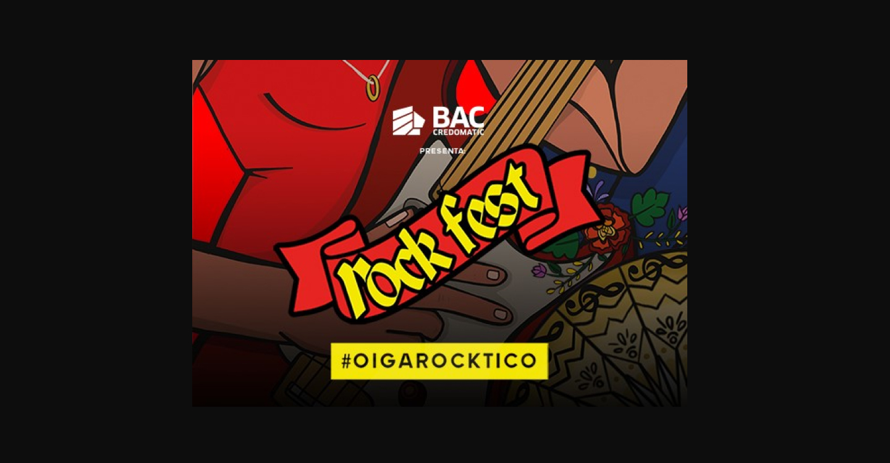
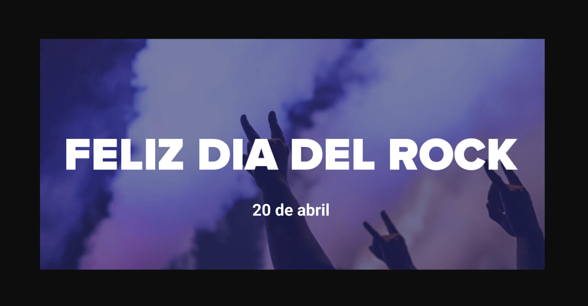
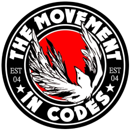
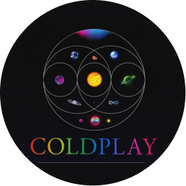

Cartelera de eventos nacionales próximos



Eventos
Fecha
Hora
Ubicación
Bandas participantes



Eventos de bandas internacionales

Ross The Boss en la batalla en Oviedo

Personas sordas disfrutaron concierto de Coldplay con tecnología e intérpretes

Ann Wilson, ‘Love of my Life’ de Queen

Apoyo a los refugiados ucranianos

Coldplay ¡Qué clase de espectáculo!

Slash nuevo disco y Gibson Les Paul Standard
Eventos
Fecha
Hora
Ubicación
Bandas participantes

